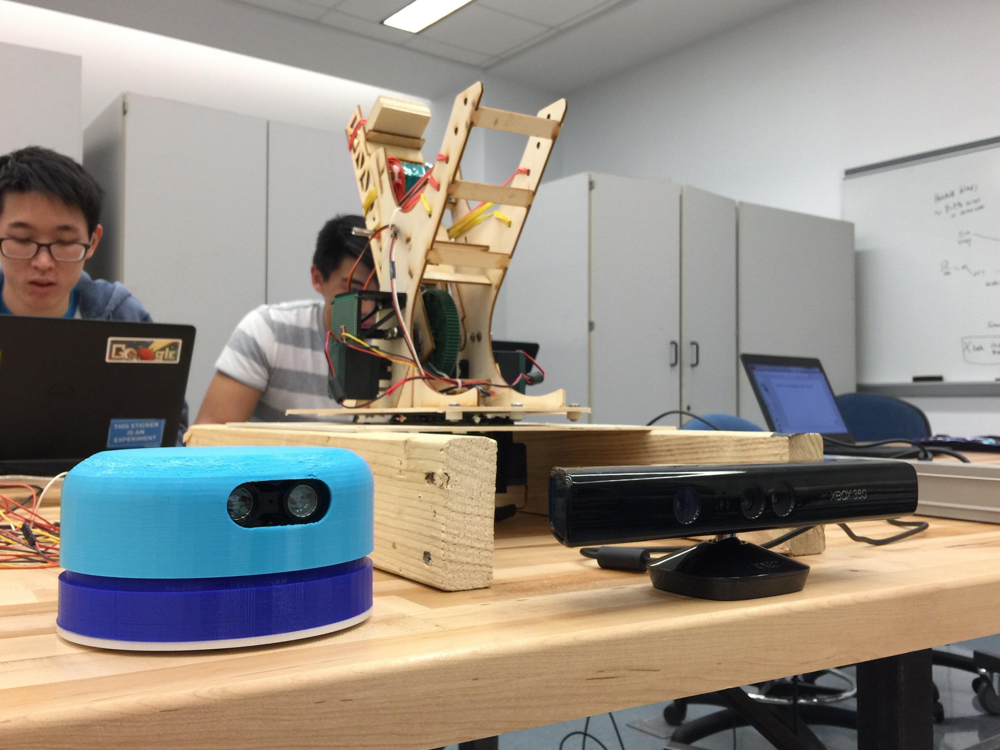

Our Story
How we got here
Sprint 1
For our first sprint, the team wanted to begin with a proof of concept that showed we could actually design and create a snowball launcher. We decided then that the main goal of the first sprint was going to be to create a small scale prototype catapult that would take in an angle and power and then fire accordingly. We were successful in producing a mini-launcher that could fire towards a target based on manual control. We also tried to experiment with laser sensors, and determined that laser range finders were too hard to interface with, so we decided we would build our own LIDAR in the upcoming sprint. But this sprint was a strong validation proving that our project was possible and could be created.
Sprint 2
Our next sprint was more experimental and a significant learning experience for us. The team wanted to progress forward with adding automation and intelligence to Frost. We decided to try and integrate computer vision into our prototype, and we also initiated exploratory ventures to create a snow compactor and a DIY LIDAR. For computer vision, we experimented with various motion detection algorithms to try to find and track people, as this was a simpler approach. Motion detection turned out not be as accurate or stable as we imagined, and while we were able to integrate it onto our prototype, its outputs confused the pan motor more often than not. The snow compactor was a failure; we couldn’t find a proper way to ensure that snowballs could be easily compacted and separated from a mass of snow, as the mechanism kept getting stuck in the snow pile. We decided to pivot from a fully autonomous robot that could also make its own snowballs in addition to shooting them to just an autonomous robot that could shoot snowballs if you could hand them to it. We were, however, able to create our own LIDAR and make it work independently. This sprint taught us about proper scoping and not trying to finish so many different projects at once.
Sprint 3
In the third sprint, our main goal became to have a fully integrated prototype working with an improved computer vision system and a working LIDAR unit. As a stretch goal, we also decided that it was time to begin working on the final version of the mechanical design, and if possible, to integrate with that. Due to complications with part ordering and fabrication, we were unable to fully finish machining the final robot. However, we were able to demonstrate a fully integrated robot prototype. We switched to body detection for the computer vision unit because it was more accurate, stable, and easily adjustable. The output to the pan motor was much more smooth and exact on the target location. We also finalized the LIDAR and interfaced that with the codebase. Combining the two data streams allowed us to create a projection map that allowed Frost to both sense and comprehend its surroundings, so it could understand its environment and differentiate between bodies and background. Implementing multiprocessing into our code, we were able to make our prototype model autonomously find, track, and fire projectiles at targets.
Sprint 4
Our final sprint was the final push, which was to translate the integrated system onto the final catapult, and finalize our integrated product. For the computer vision unit, we fine-tuned and optimized the finding and tracking, such that they could consistently and smoothly track human bodies with limited lag in frame rate. The LIDAR unit was also improved and made more consistent in its readings. We attempted to move our software onto a Raspberry Pi so that it was independent of a computer and power supply. However, we realized that our project uses way too much hardware, and plugging all of them into the Raspberry Pi causes an overload of current draw. In addition, our codebase requires computational power that exceeded that of the Raspberry Pi, making even the most optimized version run too slowly for realistic usage. Thus we decided to archive the Raspberry Pi unit and continue development with a stationary computer. This was perfectly okay because the robot itself is stationary, and we still learned a great deal about the Raspberry Pi. We finished fabricating and assembling our final catapult, which was bigger, made of metal, and much stronger than the prototype. We also remade our circuit boards and other electrical components to accommodate for the new robot. With the finished Mechanical, Software, and Electrical components ready, we finished our project by integrating all the parts together and improving the final product until it was ready.